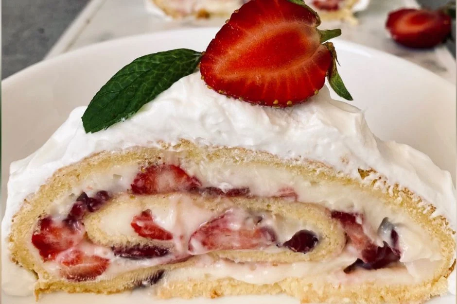

Berrylicious usulu çilekli rulo pasta  Çilekli Rulo pasta tarifi, lezzetli ve hafif bir tatlıdır. İşte malzemeler ve yapılışı:
Malzemeler: 4 adet yumurta 1 çay bardağından 1 parmak eksik toz şeker 1 kabartma tozu 1 vanilya 5 yemek kaşığı un